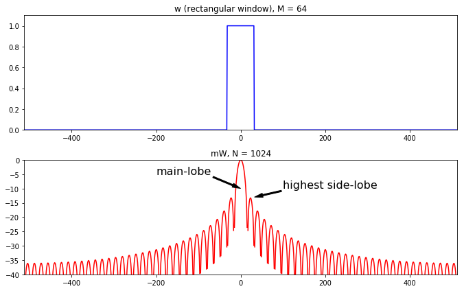
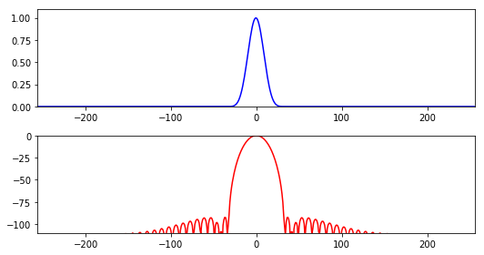
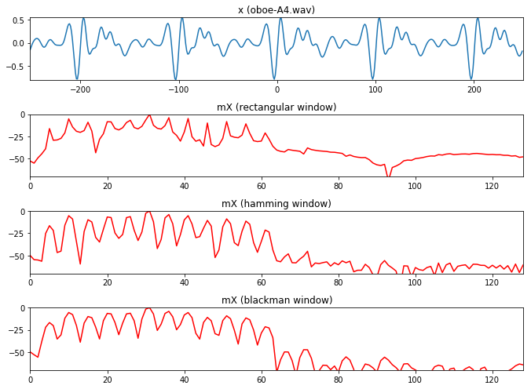
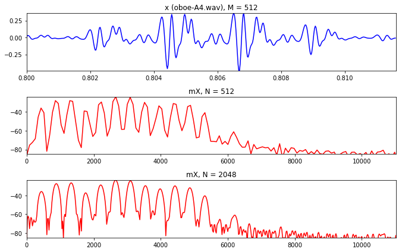
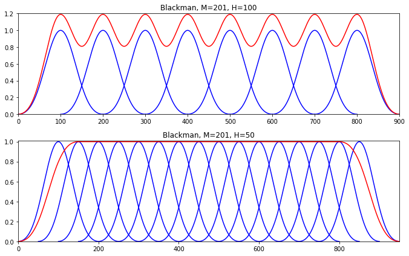
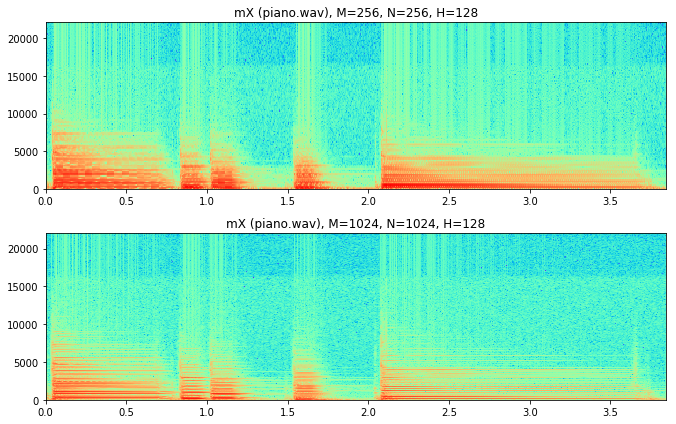
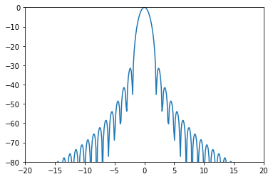
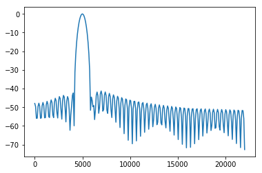

声音信号处理-STFT变化
短时傅里叶变换
变换方程
\[ \begin{align} X_l[k]&=\sum^{N/2-1}_{n=-N/2}w[n]x[n+lH]e^{-j2\pi kn/N}\ \ \ \ l=0,1,\ldots, \\ w&= 分析窗口\\ l&= 帧索引\\ H&= 跳跃大小 \end{align} \]
与DFT几乎没有大的区别,但是有了l,H,是对于一个时间段进行分析. 所以输出不是单个频谱而是一系列频谱,每一个频谱都有相同的长度,但是每一个都相同,因为输入的时间片段是不一样的.
import matplotlib.pyplot as plt
import numpy as np
from scipy.io.wavfile import read
(fs, x) = read('../sounds/oboe-A4.wav')
M = 256
H = 128
start = int(.8*fs)
plt.figure(1)
x0 = x[start:start+3*M]/float(max(x))
plt.plot(x0)
plt.axis([0, 3*M, min(x0), max(x0)+5.5])
offset = 1.5
x1 = np.zeros(3*M)+offset
x1[0:M] += (x0[0:M] * np.hamming(M))
plt.plot(x1,'b')
offset = 2.5
x2 = np.zeros(3*M)+offset
x2[H:M+H] += (x0[H:M+H] * np.hamming(M))
plt.plot(x2,'b')
offset = 3.5
x2 = np.zeros(3*M)+offset
x2[H*2:M+H*2] += (x0[2*H:M+H*2] * np.hamming(M))
plt.plot(x2,'b')
offset = 4.5
x2 = np.zeros(3*M)+offset
x2[H*3:M+H*3] += (x0[3*H:M+H*3] * np.hamming(M))
plt.plot(x2,'b')
offset = 5.5
x2 = np.zeros(3*M)+offset
x2[H*4:M+H*4] += (x0[4*H:M+H*4] * np.hamming(M))
plt.plot(x2,'b')
plt.tight_layout()
plt.show()
可以从上图观察到每一个时间片段的计算情况. 通过使用分析窗口将声音加窗与计算.最后能获得所有声音作为基本片段的总和.
转换一个窗口的正弦波
\[ \begin{aligned} x[n]&=A_0cos(2 \pi k_0 n/N)=\frac{A_0}{2}e^{j2\pi k_0 n/N}+\frac{A_0}{2}e^{-j2\pi k_0 n/N} \\ X[k]&=\sum^{N/2-1}_{n=-N/2}w[n]x[n]e^{-j2\pi kn/N} \\ &=\sum^{N/2-1}_{n=-N/2}w[n](\frac{A_0}{2}e^{j2\pi k_0 n/N}+\frac{A_0}{2}e^{-j2\pi k_0 n/N})e^{-j2\pi kn/N} \\ &=\sum^{N/2-1}_{n=-N/2}w[n]\frac{A_0}{2}e^{j2\pi k_0 n/N}e^{-j2\pi kn/N}+\sum^{N/2-1}_{n=-N/2}w[n]\frac{A_0}{2}e^{-j2\pi k_0 n/N}e^{-j2\pi kn/N}\\ &=\frac{A_0}{2}\sum^{N/2-1}_{n=-N/2}w[n]e^{-j2\pi(k-k_0)n/N}+\frac{A_0}{2}\sum^{N/2-1}_{n=-N/2}w[n]e^{-j2\pi(k+k_0)n/N} \\ &=\frac{A_0}{2}W[k-k_0]+\frac{A_0}{2}W[k+k_0] \end{aligned} \]
首先一个正弦波可以分离成两个复数信号.一个具有正频率一个具有负频率.接下来我们将x带入stft方程中,经过化简得到结果.
结果即为此窗口信号的频谱,频率偏移了输入信号的频率,并乘上了幅度.当然还有另一半(负频率).
import matplotlib.pyplot as plt
import numpy as np
from scipy.fftpack import fft, ifft
N = 256
M = 63
f0 = 1000
fs = 10000
A0 = .8
hN = N//2
hM = (M+1)//2
fftbuffer = np.zeros(N)
X1 = np.zeros(N, dtype='complex')
X2 = np.zeros(N, dtype='complex')
x = A0 * np.cos(2*np.pi*f0/fs*np.arange(-hM+1,hM))
plt.figure(1, figsize=(9.5, 7))
w = np.hanning(M)
plt.subplot(2,3,1)
plt.title('w (hanning window)')
plt.plot(np.arange(-hM+1, hM), w, 'b', lw=1.5)
plt.axis([-hM+1, hM, 0, 1])
fftbuffer[:hM] = w[hM-1:]
fftbuffer[N-hM+1:] = w[:hM-1]
X = fft(fftbuffer)
X1[:hN] = X[hN:]
X1[N-hN:] = X[:hN]
mX = 20*np.log10(abs(X1))
plt.subplot(2,3,2)
plt.title('mW')
plt.plot(np.arange(-hN, hN), mX, 'r', lw=1.5)
plt.axis([-hN,hN,-40,max(mX)])
pX = np.angle(X1)
plt.subplot(2,3,3)
plt.title('pW')
plt.plot(np.arange(-hN, hN), np.unwrap(pX), 'c', lw=1.5)
plt.axis([-hN,hN,min(np.unwrap(pX)),max(np.unwrap(pX))])
plt.subplot(2,3,4)
plt.title('xw (windowed sinewave)')
xw = x*w
plt.plot(np.arange(-hM+1, hM), xw, 'b', lw=1.5)
plt.axis([-hM+1, hM, -1, 1])
fftbuffer = np.zeros(N)
fftbuffer[0:hM] = xw[hM-1:]
fftbuffer[N-hM+1:] = xw[:hM-1]
X = fft(fftbuffer)
X2[:hN] = X[hN:]
X2[N-hN:] = X[:hN]
mX2 = 20*np.log10(abs(X2))
plt.subplot(2,3,5)
plt.title('mXW')
plt.plot(np.arange(-hN, hN), mX2, 'r', lw=1.5)
plt.axis([-hN,hN,-40,max(mX)])
pX = np.angle(X2)
plt.subplot(2,3,6)
plt.title('pXW')
plt.plot(np.arange(-hN, hN), np.unwrap(pX), 'c', lw=1.5)
plt.axis([-hN,hN,min(np.unwrap(pX)),max(np.unwrap(pX))])
plt.tight_layout()
plt.show()
观察上图:
第一幅图是一个汉宁窗,下面则是加窗之后的正弦波.上面左边分别为汉宁窗的幅度谱与相位谱.
当我们对加窗之后的正弦波进行DFT之后,可以看到得到的幅度谱与相位谱与上面相似,只是波峰点移动到了正弦波的频率处.并且由于正负频率特性,波形是对称的.
分析窗口
分析窗口通常一个实函数,并且在原点周围是对称的.
关于窗口,中间的主瓣我们主要关注主瓣宽度,对于旁瓣我们关注与旁瓣的最高水平.
矩形窗函数
\[ \begin{aligned} w[n]&=\begin{cases} 1,\ \ \ n=-M/2,\ldots,0,\ldots,M/2 \\ 0,\ \ \ n=elsewhere \end{cases}\\ W[k]&=\frac{sin(\pi k)}{sin(\pi k/M)} \end{aligned} \]
矩形窗是最基础的窗函数,他的时域图形比较简单,但是频域图形相当有趣.
import matplotlib.pyplot as plt
import numpy as np
from scipy.fftpack import fft
M = 64
N = 1024
hN = N//2
hM = M//2
fftbuffer = np.zeros(N)
mX1 = np.zeros(N)
plt.figure(1, figsize=(9.5, 6))
fftbuffer[hN-hM:hN+hM]=np.ones(M)
plt.subplot(2,1,1)
plt.plot(np.arange(-hN, hN), fftbuffer, 'b', lw=1.5)
plt.axis([-hN, hN, 0, 1.1])
plt.title('w (rectangular window), M = 64')
X = fft(fftbuffer)
mX = 20*np.log10(abs(X))
mX1[:hN] = mX[hN:]
mX1[N-hN:] = mX[:hN]
plt.subplot(2,1,2)
plt.plot(np.arange(-hN, hN), mX1-max(mX), 'r', lw=1.5)
plt.axis([-hN,hN,-40,0])
plt.title('mW, N = 1024')
plt.annotate('main-lobe', xy=(0,-10), xytext=(-200, -5), fontsize=16, arrowprops=(dict(facecolor='black', width=2, headwidth=6, shrink=0.01)))
plt.annotate('highest side-lobe', xy=(32,-13), xytext=(100, -10), fontsize=16, arrowprops=(dict(facecolor='black', width=2, headwidth=6, shrink=0.01)))
plt.tight_layout()
plt.show()
print("主瓣宽度:2bins\n旁瓣最大值:-13.3dB")
主瓣宽度:2bins
旁瓣最大值:-13.3dB汉明窗
最常用的窗口函数,是一个升余弦函数.
\[ \begin{aligned} w[n]&=0.5+0.5cos(2\pi n/M),\ \ \ \ n=-M/2,\ldots,0,\ldots,M/2\\ W[k]&=0.5D[k]+0.25(D[k-1]+D[k+1])\ \ \ \ where D[k]=\frac{sin(\pi k)}{sin(\pi k/M)} \end{aligned} \]
他的主瓣宽度更宽,旁瓣宽度更低.
import matplotlib.pyplot as plt
import numpy as np
from scipy.fftpack import fft
M = 64
N = 512
hN = N//2
hM = M//2
fftbuffer = np.zeros(N)
mX1 = np.zeros(N)
plt.figure(1, figsize=(7.5, 4))
fftbuffer[hN-hM:hN+hM]=np.hamming(M)
plt.subplot(2,1,1)
plt.plot(np.arange(-hN, hN), fftbuffer, 'b', lw=1.5)
plt.axis([-hN, hN, 0, 1.1])
X = fft(fftbuffer)
mX = 20*np.log10(abs(X))
mX1[:hN] = mX[hN:]
mX1[N-hN:] = mX[:hN]
plt.subplot(2,1,2)
plt.plot(np.arange(-hN, hN), mX1-max(mX), 'r', lw=1.5)
plt.axis([-hN,hN,-60,0])
plt.tight_layout()
plt.show()
print("主瓣宽度:4 bins\n旁瓣最高:-42.7dB")
主瓣宽度:4 bins
旁瓣最高:-42.7dB布莱克曼窗
布莱克曼窗口是两个正弦曲线的总和.
\[ \begin{aligned} w[n]=0.42-0.5cos(2\pi n/M)+0.08cos(4\pi n/M) \end{aligned} \]
他比汉明窗两侧少了一些突变.所以在旁瓣方面有着显著改善.
import matplotlib.pyplot as plt
import numpy as np
from scipy.fftpack import fft
from scipy import signal
M = 64
N = 512
hN = N//2
hM = M//2
fftbuffer = np.zeros(N)
mX1 = np.zeros(N)
plt.figure(1, figsize=(7.5, 4))
fftbuffer[hN-hM:hN+hM]=signal.blackmanharris(M)
plt.subplot(2,1,1)
plt.plot(np.arange(-hN, hN), fftbuffer, 'b', lw=1.5)
plt.axis([-hN, hN, 0, 1.1])
X = fft(fftbuffer)
mX = 20*np.log10(abs(X))
mX1[:hN] = mX[hN:]
mX1[N-hN:] = mX[:hN]
plt.subplot(2,1,2)
plt.plot(np.arange(-hN, hN), mX1-max(mX), 'r', lw=1.5)
plt.axis([-hN,hN,-110,0])
plt.tight_layout()
plt.show()
print("主瓣宽度:6 bins\n旁瓣最大值:-58dB")
主瓣宽度:6 bins
旁瓣最大值:-58dB布莱克曼哈里斯窗
这是一个特殊的窗口．
\[ \begin{aligned} w(n)=\frac{1}{M}\sum^3_{l=0}\alpha_lcos(2nl\pi /M ),\ \ \ \ n=-M/2,\ldots,0,\ldots,M/2\\ where \alpha_0=0.35875\ \ \alpha_1=0.48829\ \ \alpha_0=0.14128\ \ \alpha_0=0.01168\ \ \end{aligned} \]
可以说他基本没有旁瓣，他的旁瓣电平低于-92dB。以信噪比的方式去考虑，这是一个非常重要的数字，92dB基本上低于16的底噪。
import matplotlib.pyplot as plt
import numpy as np
from scipy.fftpack import fft
from scipy import signal
M = 64
N = 512
hN = N//2
hM = M//2
fftbuffer = np.zeros(N)
mX1 = np.zeros(N)
plt.figure(1, figsize=(7.5, 4))
fftbuffer[hN-hM:hN+hM]=signal.blackmanharris(M)
plt.subplot(2,1,1)
plt.plot(np.arange(-hN, hN), fftbuffer, 'b', lw=1.5)
plt.axis([-hN, hN, 0, 1.1])
X = fft(fftbuffer)
mX = 20*np.log10(abs(X))
mX1[:hN] = mX[hN:]
mX1[N-hN:] = mX[:hN]
plt.subplot(2,1,2)
plt.plot(np.arange(-hN, hN), mX1-max(mX), 'r', lw=1.5)
plt.axis([-hN,hN,-110,0])
plt.tight_layout()
plt.show()
print("主瓣宽度:8 bins\n旁瓣最大值:-92dB")
主瓣宽度:8 bins
旁瓣最大值:-92dB结果比较
现在比较几个窗口的处理的不同输出结果：
import matplotlib.pyplot as plt
import numpy as np
import time, os, sys
sys.path.append('../software/models/')
import dftModel as DF
import utilFunctions as UF
from scipy.fftpack import fft, ifft
import math
(fs, x) = UF.wavread('../sounds/oboe-A4.wav')
N = 512
pin = 5000
w = np.ones(501)
hM1 = int(math.floor((w.size+1)/2))
hM2 = int(math.floor(w.size/2))
x1 = x[pin-hM1:pin+hM2]
plt.figure(1, figsize=(9.5, 7))
plt.subplot(4,1,1)
plt.plot(np.arange(-hM1, hM2), x1, lw=1.5)
plt.axis([-hM1, hM2, min(x1), max(x1)])
plt.title('x (oboe-A4.wav)')
mX, pX = DF.dftAnal(x1, w, N)
mX = mX - max(mX)
plt.subplot(4,1,2)
plt.plot(np.arange(mX.size), mX, 'r', lw=1.5)
plt.axis([0,N/4,-70,0])
plt.title ('mX (rectangular window)')
w = np.hamming(501)
mX, pX = DF.dftAnal(x1, w, N)
mX = mX - max(mX)
plt.subplot(4,1,3)
plt.plot(np.arange(mX.size), mX, 'r', lw=1.5)
plt.axis([0,N/4,-70,0])
plt.title ('mX (hamming window)')
w = np.blackman(501)
mX, pX = DF.dftAnal(x1, w, N)
mX = mX - max(mX)
plt.subplot(4,1,4)
plt.plot(np.arange(mX.size), mX, 'r', lw=1.5)
plt.axis([0,N/4,-70,0])
plt.title ('mX (blackman window)')
plt.tight_layout()
plt.show()
窗口尺寸
窗口的尺寸当然可以变化,但是尺寸的变化影响着什么? 看下面这个例子:
小窗口我们可以看到谐波很少,信息很少,样本很少.
大窗口样本很多,可以看到更多的声音细节,但是噪音也更加多.
所以这将是一个重要的选择.
(fs, x) = UF.wavread('../sounds/oboe-A4.wav')
N = 128
start = int(.81*fs)
x1 = x[start:start+N]
plt.figure(1, figsize=(9.5, 6))
plt.subplot(321)
plt.plot(np.arange(start, (start+N), 1.0)/fs, x1*np.hamming(N), 'b', lw=1.5)
plt.axis([start/fs, (start+N)/fs, min(x1*np.hamming(N)), max(x1*np.hamming(N))])
plt.title('x1, M = 128')
mX, pX = DF.dftAnal(x1, np.hamming(N), N)
plt.subplot(323)
plt.plot((fs/2.0)*np.arange(mX.size)/float(mX.size), mX, 'r', lw=1.5)
plt.axis([0,fs/2.0,-90,max(mX)])
plt.title('mX1')
plt.subplot(325)
plt.plot((fs/2.0)*np.arange(mX.size)/float(mX.size), pX, 'c', lw=1.5)
plt.axis([0,fs/2.0,min(pX),max(pX)])
plt.title('pX1')
N = 1024
start = int(.81*fs)
x2 = x[start:start+N]
mX, pX = DF.dftAnal(x2, np.hamming(N), N)
plt.subplot(322)
plt.plot(np.arange(start, (start+N), 1.0)/fs, x2*np.hamming(N), 'b', lw=1.5)
plt.axis([start/fs, (start+N)/fs, min(x2), max(x2)])
plt.title('x2, M = 1024')
plt.subplot(324)
plt.plot((fs/2.0)*np.arange(mX.size)/float(mX.size), mX, 'r', lw=1.5)
plt.axis([0,fs/2.0,-90,max(mX)])
plt.title('mX2')
plt.subplot(326)
plt.plot((fs/2.0)*np.arange(mX.size)/float(mX.size), pX, 'c', lw=1.5)
plt.axis([0,fs/2.0,min(pX),max(pX)])
plt.title('pX2')
plt.tight_layout()
plt.show()
奇偶窗口
另外的一个问题是,即使一个微小的差异(窗口的奇偶不同),对于相位谱影响巨大.
当我们做fft的时候,最好使用奇数窗口,这样我们的相位谱可以正好对称.
import matplotlib.pyplot as plt
import numpy as np
from scipy.fftpack import fft, fftshift
from scipy import signal
M = 32
N = 128
hN = N//2
hM = M//2
fftbuffer = np.zeros(N)
w = signal.blackman(M)
plt.figure(1, figsize=(9.5, 6))
plt.subplot(3,2,1)
plt.plot(np.arange(-hM, hM), w, 'b', lw=1.5)
plt.axis([-hM, hM-1, 0, 1.05])
plt.title('w1, M=32')
fftbuffer = np.zeros(N)
fftbuffer[:hM] = w[hM:]
fftbuffer[N-hM:] = w[:hM]
X = fft(fftbuffer)
mX = 20*np.log10(abs(fftshift(X)))
plt.subplot(3,2,3)
plt.plot(np.arange(-hN, hN), mX-max(mX), 'r', lw=1.5)
plt.axis([-hN//2,hN//2,-80,1])
plt.title('mW1')
pX = np.angle(fftshift(X))
plt.subplot(3,2,5)
plt.plot(np.arange(-hN, hN), pX, 'c', lw=1.5)
plt.axis([-hN,hN-1,-np.pi,np.pi])
plt.title('pW1')
M = 31
N = 128
hN = N//2
hM = (M+1)//2
fftbuffer = np.zeros(N)
w = signal.blackman(M)
plt.subplot(3,2,2)
plt.plot(np.arange(-hM, hM-1), w, 'b', lw=1.5)
plt.axis([-hM, hM, 0, 1.05])
plt.title('w2, M=31')
fftbuffer = np.zeros(N)
fftbuffer[:hM] = w[hM-1:]
fftbuffer[N-hM+1:] = w[:hM-1]
X = fft(fftbuffer)
mX = 20*np.log10(abs(fftshift(X)))
plt.subplot(3,2,4)
plt.plot(np.arange(-hN, hN), mX-max(mX), 'r', lw=1.5)
plt.axis([-hN/2,hN/2-1,-80,1])
plt.title('mW2')
pX = np.angle(fftshift(X))
plt.subplot(3,2,6)
plt.plot(np.arange(-hN, hN), pX, 'c', lw=1.5)
plt.axis([-hN,hN-1,-np.pi,np.pi])
plt.title('pW2')
plt.tight_layout()
plt.show()
FFT尺寸
从给定的512窗口大小开始,我们选择不同的FFT尺寸,第一幅图我们可以得到一个不错的图.当尺寸更大的时候我们可以得到更加光滑的图片.
import math
import matplotlib.pyplot as plt
import numpy as np
import time, os, sys
(fs, x) = UF.wavread('../sounds/oboe-A4.wav')
M = 512
N = 512
start = int(.8*fs)
x1 = x[start:start+M]
xw = x1 * np.hamming(M)
plt.figure(1, figsize=(9.5, 6))
plt.subplot(311)
plt.plot(np.arange(start, (start+M), 1.0)/fs, xw, 'b', lw=1.5)
plt.axis([start/fs, (start+M)/fs, min(xw), max(xw)])
plt.title('x (oboe-A4.wav), M = 512')
mX, pX = DF.dftAnal(x1, np.hamming(N), N)
plt.subplot(312)
plt.plot((fs/2.0)*np.arange(mX.size)/float(mX.size), mX, 'r', lw=1.5)
plt.axis([0,fs/4.0,-85,max(mX)])
plt.title('mX, N = 512')
M = 512
N = 2048
start = int(.8*fs)
x1 = x[start:start+M]
xw = x1 * np.hamming(M)
mX, pX = DF.dftAnal(x1, np.hamming(M), N)
plt.subplot(313)
plt.plot((fs/2.0)*np.arange(mX.size)/float(mX.size), mX, 'r', lw=1.5)
plt.axis([0,fs/4.0,-85,max(mX)])
plt.title('mX, N = 2048')
plt.tight_layout()
plt.show()
跳跃
这是窗函数的步进长度,称为跳跃. 下面展示两个不同的跳跃大小所带来的变化.
第一个例子,窗口大小为201,跳跃大小为100,大约窗大小的一半.红色线条是窗口的总和,可以看到这个总和不是很好,在震荡.
第二个例子,跳跃大小为窗口大小的四分之一.现在所得到的总和就是我们所需要的.
plt.figure(1, figsize=(9.5, 6))
N= 1000
M = 201
w = signal.blackman(M)
w1 = w/sum(w)
y = np.zeros(N)
H = 100
pin = 0
pend = N - M
plt.subplot(211)
while pin<pend:
y [pin:pin+M] += w1*H
plt.plot(np.arange(pin, pin+M), w, 'b', lw=1.5)
pin += H
plt.plot(np.arange(0, N), y, 'r', lw=1.5)
plt.axis([0, N-H, 0, max(y)+.01])
plt.title('Blackman, M=201, H=100')
y = np.zeros(N)
H = 50
pin = 0
pend = N - M
plt.subplot(212)
while pin<pend:
y [pin:pin+M] += w1*H
plt.plot(np.arange(pin, pin+M), w, 'b', lw=1.5)
pin += H
plt.plot(np.arange(0, N), y, 'r', lw=1.5)
plt.axis([0, N-H, 0, max(y)+.01])
plt.title('Blackman, M=201, H=50')
plt.tight_layout()
plt.show()

分析真实信号
终于我们掌握了基本原理,可以来分析一下真实的信号:
在第一幅图上我们看到的是幅度谱.经过STFT的分析,得到是一个DFT序列.纵轴是频率,横轴是时间,颜色强度是对应的幅值.实际上这就是常说的语谱图.
这里我们可以清楚的看到钢琴的四次敲击,以及横轴对钢琴的谐波反应.对于窗口的大小,如果窗口小,可以得到一个好的时间分辨率,大的窗口会得到较好的频率分辨率.
import numpy as np
import time, os, sys
import stft as STFT
import utilFunctions as UF
import matplotlib.pyplot as plt
from scipy.signal import hamming
from scipy.fftpack import fft
import math
(fs, x) = UF.wavread('../sounds/piano.wav')
plt.figure(1, figsize=(9.5, 6))
w = np.hamming(256)
N = 256
H = 128
mX1, pX1 = STFT.stftAnal(x, w, N, H)
plt.subplot(211)
numFrames = int(mX1[:,0].size)
frmTime = H*np.arange(numFrames)/float(fs)
binFreq = np.arange(mX1[0,:].size)*float(fs)/N
plt.pcolormesh(frmTime, binFreq, np.transpose(mX1),cmap=plt.get_cmap('rainbow'))
plt.title('mX (piano.wav), M=256, N=256, H=128')
plt.autoscale(tight=True)
w = np.hamming(1024)
N = 1024
H = 128
mX2, pX2 = STFT.stftAnal(x, w, N, H)
plt.subplot(212)
numFrames = int(mX2[:,0].size)
frmTime = H*np.arange(numFrames)/float(fs)
binFreq = np.arange(mX2[0,:].size)*float(fs)/N
plt.pcolormesh(frmTime, binFreq, np.transpose(mX2),cmap=plt.get_cmap('rainbow'))
plt.title('mX (piano.wav), M=1024, N=1024, H=128')
plt.autoscale(tight=True)
plt.tight_layout()
plt.show()
分析STFT的幅度谱和相位谱
我们也可以可视化幅度谱和相位谱
import stft as STFT
import utilFunctions as UF
import matplotlib.pyplot as plt
from scipy.signal import hamming
from scipy.fftpack import fft
import math
(fs, x) = UF.wavread('../sounds/piano.wav')
w = np.hamming(1001)
N = 1024
H = 256
mX, pX = STFT.stftAnal(x, w, N, H)
plt.figure(1, figsize=(9.5, 6))
plt.subplot(211)
numFrames = int(mX[:,0].size)
frmTime = H*np.arange(numFrames)/float(fs)
binFreq = np.arange(N/2+1)*float(fs)/N
plt.pcolormesh(frmTime, binFreq, np.transpose(mX),cmap=plt.get_cmap('rainbow'))
plt.title('mX (piano.wav), M=1001, N=1024, H=256')
plt.autoscale(tight=True)
plt.subplot(212)
numFrames = int(pX[:,0].size)
frmTime = H*np.arange(numFrames)/float(fs)
binFreq = np.arange(N/2+1)*float(fs)/N
plt.pcolormesh(frmTime, binFreq, np.diff(np.transpose(pX),axis=0),cmap=plt.get_cmap('rainbow'))
plt.title('pX derivative (piano.wav), M=1001, N=1024, H=256')
plt.autoscale(tight=True)
plt.tight_layout()
plt.show()
逆STFT
与IDFT相同,我们当然可以计算ISTFT.因为STFT计算出每个帧单独的频谱,所以我们采用每个帧的逆变换,最终累加. \[ \begin{aligned} y[n]=\sum^{L-1}_{l=0}Shift_{lH,n}[\frac{1}{N}\sum^{N/2-1}_{k=-N/2}X_l[k]e^{j2\pi kn/N}] \end{aligned} \] 每次的输出帧: \[ \begin{aligned} yw_l[n]=x(n+lH)w[n] \end{aligned} \] 以及输出音频信号: \[ \begin{aligned} y[n]=\sum^{L-1}_{l=0}yw_l[n]=x[n]\sum^{L-1}_{l=0}w[n-lH] \end{aligned} \]
编程指南
import numpy as np
from scipy.signal import get_window
from scipy.fftpack import fft
import math
import matplotlib.pyplot as plt
M=63
window=get_window('hanning',M) # 获得窗
hM1=int(math.floor((M+1)/2))
hM2=int(math.floor(M/2))
# 0 填充
N=512
hN=int(N/2)
fftbuffer=np.zeros(N)
fftbuffer[:hM1]=window[hM2:]
fftbuffer[N-hM2:]=window[:hM2]
# fft
X=fft(fftbuffer)
absX=abs(X)
# 保证小于一个最小值
absX[absX<np.finfo(float).eps]=np.finfo(float).eps
mX=20*np.log10(absX)
pX=np.angle(X)
mX1=np.zeros(N)
pX1=np.zeros(N)
mX1[:hN]=mX[hN:]
mX1[N-hN:]=mX[:hN]
pX1[:hN]=pX[hN:]
pX1[N-hN:]=pX[:hN]
plt.plot(np.arange(-hN,hN)/float(N)*M,mX1-max(mX1))
plt.axis([-20,20,-80,0])
plt.show()
import numpy as np
from scipy.signal import get_window
from scipy.fftpack import fft
import math
sys.path.append('../software/models/')
import matplotlib.pyplot as plt
import dftModel as DFT
fs=44100
f=5000.0
M=101
x=np.cos(2*np.pi*f*np.arange(M)/fs)
N=512
w=get_window('hamming',M)
mX,pX=DFT.dftAnal(x,w,N)
plt.plot(np.arange(0,fs//2,fs//N),mX-max(mX))
plt.show()
STFT
import numpy as np
import matplotlib.pyplot as plt
import os,sys
from scipy.signal import get_window
sys.path.append('../software/models/')
import utilFunctions as UF
import stft as STFT
inputfile='../sounds/flute-A4.wav'
window='hamming'
M=801
N=1024
H=400
fs,x=UF.wavread(inputfile)
w=get_window(window,M)
mX,pX=STFT.stftAnal(x,w,N,H)plt.pcolor(mX.T,cmap=plt.get_cmap('rainbow'))